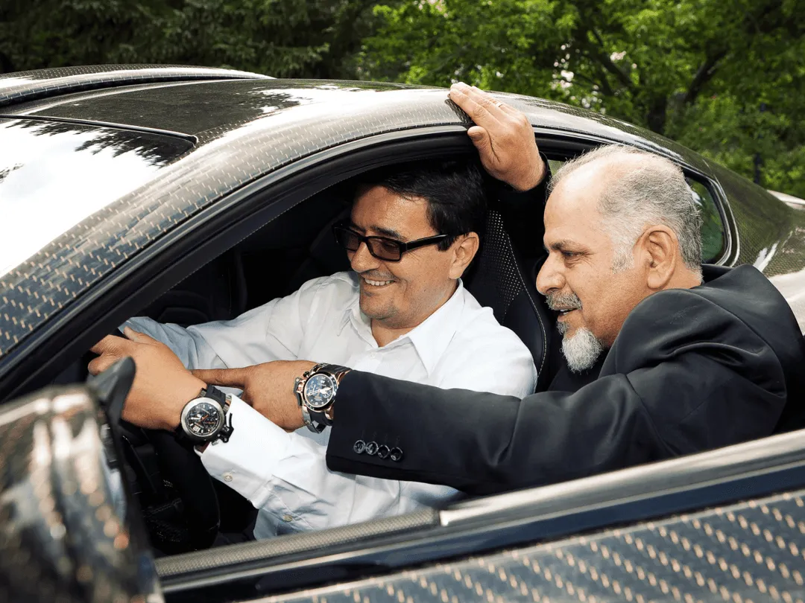

SOMOS MANSORY
Nuestra misión va más allá de la afinacion. Creamos obras maestras únicas que desafían lo convencional.
Mision & Vision
RENDIMIENTO EXTRAVAGANCIA
Producción al más alto nivel técnico combinada con una artesanía magistral y materiales más preciosos – este es el estándar de calidad de las corporaciones MANSORY. Los programas aerodinámicos de diseño armónico, las llantas de aluminio ultraligeras y las potentes mejoras en el rendimiento del motor son la base del programa de tecnología MANSORY. Los accesorios de alta calidad y los accesorios interiores elegantes completan el surtido. Ya sean dinámicamente llamativos o extravagantes y nobles, los interiores MANSORY brindan comodidad y confianza.
Cada vehículo que sale de nuestro taller es un testimonio de nuestra dedicación a superar los límites del diseño y el rendimiento automotriz.
Nuestros hábiles artesanos, equipados con una pasión por la excelencia, elaboran meticulosamente cada detalle, transformando los automóviles en obras maestras a medida. La Manufactura es el corazón de la filosofía de Mansory, donde el lujo y la ingeniería convergen para redefinir la experiencia de conducción. Explore nuestra sección de Manufactura para profundizar en el arte detrás de nuestras modificaciones exclusivas, mostrando una combinación armoniosa de tecnología de vanguardia y artesanía atemporal